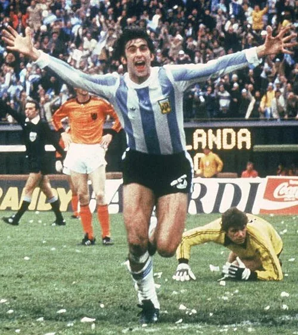

The profile
Mario Kempes
Mario Kempes was born in Córdoba Province, Argentina, and began his senior career with Instituto. He developed into a prolific forward before moving to clubs farther from home.
He played for Rosario Central, Valencia and River Plate during a prolific career. He was a powerful runner who could carry the ball through a defence and finish from the edge of the area or inside it. With Argentina, his directness gave the team a forceful attacking identity.
Kempes became the central figure of Argentina's first World Cup title in 1978. He scored six goals and was named both top scorer and best player, then struck twice in the final against the Netherlands. His runs repeatedly broke through a stubborn defence, and Argentina's 3–1 extra-time win made his tournament inseparable from the country's triumph.
1974West Germany
Second round
Group D Poland3 : 2Argentina
- Grzegorz LATO7′
- Andrzej SZARMACH8′
- Grzegorz LATO62′
- Ramon HEREDIA60′
- Carlos BABINGTON66′
Polandhome
Starting lineup
- Jan TOMASZEWSKI
- Antoni SZYMANOWSKI
- Jerzy GORGON
- Wladyslaw ZMUDA
- Adam MUSIAL
- Kazimierz DEYNA
- Henryk KASPERCZAK
- Zygmunt MASZCZYK
- Grzegorz LATO
- Andrzej SZARMACH
- Robert GADOCHA
Substitutions
- 70′Jan DOMARSKI on · Andrzej SZARMACH off
- 85′Leslaw CMIKIEWICZ on · Robert GADOCHA off
Argentinaaway
Starting lineup
- Daniel CARNEVALI
- Angel BARGAS
- Ramon HEREDIA
- Roberto PERFUMO
- Francisco SA
- Enrique WOLFF
- Miguel BRINDISI
- Ruben AYALA
- Carlos BABINGTON
- Agustin BALBUENA
- Mario KEMPES
Substitutions
- 45′Rene HOUSEMAN on · Miguel BRINDISI off
- 67′Roberto TELCH on · Angel BARGAS off
Group D Argentina1 : 1Italy
- Rene HOUSEMAN19′
- Roberto PERFUMO35′ · own goal
Argentinahome
Starting lineup
- Daniel CARNEVALI
- Ramon HEREDIA
- Roberto PERFUMO
- Francisco SA
- Enrique WOLFF
- Roberto TELCH
- Ruben AYALA
- Carlos BABINGTON
- Rene HOUSEMAN
- Mario KEMPES
- Hector YAZALDE
Substitutions
- 60′Ruben GLARIA on · Enrique WOLFF off
- 78′Enrique CHAZARRETA on · Hector YAZALDE off
Italyaway
Starting lineup
- Dino ZOFF
- Luciano SPINOSI
- Giacinto FACCHETTI
- Francesco MORINI
- Tarcisio BURGNICH
- Romeo BENETTI
- Sandro MAZZOLA
- Fabio CAPELLO
- Gianni RIVERA
- Gigi RIVA
- Pietro ANASTASI
Substitutions
- 66′Giuseppe WILSON on · Gianni RIVERA off
- 66′Franco CAUSIO on · Francesco MORINI off
Group D Argentina4 : 1Haiti
- Hector YAZALDE15′
- Rene HOUSEMAN18′
- Ruben AYALA55′
- Hector YAZALDE68′
- Emmanuel SANON63′
Argentinahome
Starting lineup
- Daniel CARNEVALI
- Ramon HEREDIA
- Roberto PERFUMO
- Francisco SA
- Enrique WOLFF
- Roberto TELCH
- Ruben AYALA
- Carlos BABINGTON
- Rene HOUSEMAN
- Mario KEMPES
- Hector YAZALDE
Substitutions
- 52′Agustin BALBUENA on · Mario KEMPES off
- 57′Miguel BRINDISI on · Rene HOUSEMAN off
Haitiaway
Starting lineup
- Henry FRANCILLON
- Serge DUCOSTE
- Pierre BAYONNE
- Wilner NAZAIRE
- Wilfred LOUIS
- Philippe VORBE
- Jean Claude DESIR
- Eddy ANTOINE
- Serge RACINE
- Guy SAINT-VIL
- Emmanuel SANON
Substitutions
- 25′Joseph-Marion LEANDRE on · Wilner NAZAIRE off
- 52′Fritz LEANDRE on · Guy SAINT-VIL off
Second-phase Group 1 Netherlands4 : 0Argentina
- Johan CRUYFF10′
- Ruud KROL25′
- Johnny REP73′
- Johan CRUYFF90′
Netherlandshome
Starting lineup
- Jan JONGBLOED
- Ruud KROL
- Wim RIJSBERGEN
- Wim SUURBIER
- Arie HAAN
- Wim VAN HANEGEM
- Wim JANSEN
- Johan NEESKENS
- Johan CRUYFF
- Rob RENSENBRINK
- Johnny REP
Substitutions
- 84′Rinus ISRAEL on · Wim SUURBIER off
Argentinaaway
Starting lineup
- Daniel CARNEVALI
- Ramon HEREDIA
- Roberto PERFUMO
- Francisco SA
- Carlos SQUEO
- Enrique WOLFF
- Roberto TELCH
- Ruben AYALA
- Agustin BALBUENA
- Rene HOUSEMAN
- Hector YAZALDE
Substitutions
- 45+1′Mario KEMPES on · Enrique WOLFF off
Second-phase Group 1 Brazil2 : 1Argentina
- RIVELLINO32′
- JAIRZINHO49′
- Miguel BRINDISI35′
Brazilhome
Starting lineup
- LEAO
- LUIS PEREIRA
- MARINHO PERES
- ZE MARIA
- MARINHO CHAGAS
- RIVELLINO
- PAULO CESAR
- CARPEGIANI
- DIRCEU
- JAIRZINHO
- VALDOMIRO
Substitutions
- No substitutions
Argentinaaway
Starting lineup
- Daniel CARNEVALI
- Angel BARGAS
- Ruben GLARIA
- Ramon HEREDIA
- Francisco SA
- Carlos SQUEO
- Miguel BRINDISI
- Ruben AYALA
- Carlos BABINGTON
- Agustin BALBUENA
- Mario KEMPES
Substitutions
- 45+1′Jorge CARRASCOSA on · Mario KEMPES off
- 45+1′Rene HOUSEMAN on · Francisco SA off
Second-phase Group 1 Argentina1 : 1East Germany
- Rene HOUSEMAN20′
- Joachim STREICH14′
Argentinahome
Starting lineup
- Ubaldo FILLOL
- Angel BARGAS
- Jorge CARRASCOSA
- Ramon HEREDIA
- Enrique WOLFF
- Miguel BRINDISI
- Roberto TELCH
- Ruben AYALA
- Carlos BABINGTON
- Rene HOUSEMAN
- Mario KEMPES
Substitutions
- No substitutions
East Germanyaway
Starting lineup
- Juergen CROY
- Lothar KURBJUWEIT
- Bernd BRANSCH
- Konrad WEISE
- Gerd KISCHE
- Ruediger SCHNUPHASE
- Juergen POMMERENKE
- Juergen SPARWASSER
- Wolfram LOEWE
- Joachim STREICH
- Martin HOFFMANN
Substitutions
- 65′Eberhard VOGEL on · Wolfram LOEWE off
- 80′Peter DUCKE on · Joachim STREICH off
1978Argentina
Champion
Group A Argentina2 : 1Hungary
- Leopoldo LUQUE15′
- Daniel BERTONI83′
- Karoly CSAPO10′
Argentinahome
Starting lineup
- Ubaldo FILLOL
- Luis GALVAN
- Jorge OLGUIN
- Daniel PASSARELLA
- Alberto TARANTINI
- Osvaldo ARDILES
- Americo GALLEGO
- Rene HOUSEMAN
- Jose VALENCIA
- Mario KEMPES
- Leopoldo LUQUE
Substitutions
- 67′Daniel BERTONI on · Rene HOUSEMAN off
- 75′Norberto ALONSO on · Jose VALENCIA off
Hungaryaway
Starting lineup
- Sandor GUJDAR
- Peter TOROK
- Istvan KOCSIS
- Jozsef TOTH
- Zoltan KEREKI
- Sandor ZOMBORI
- Tibor NYILASI
- Sandor PINTER
- Karoly CSAPO
- Laszlo NAGY
- Andras TOROCSIK
Substitutions
- 45+1′Gyozo MARTOS on · Peter TOROK off
Group A Argentina2 : 1France
- Daniel PASSARELLA45′ · pen.
- Leopoldo LUQUE73′
- Michel PLATINI60′
Argentinahome
Starting lineup
- Ubaldo FILLOL
- Luis GALVAN
- Jorge OLGUIN
- Daniel PASSARELLA
- Alberto TARANTINI
- Osvaldo ARDILES
- Americo GALLEGO
- Rene HOUSEMAN
- Jose VALENCIA
- Mario KEMPES
- Leopoldo LUQUE
Substitutions
- 64′Norberto ALONSO on · Jose VALENCIA off
- 71′Oscar ORTIZ on · Norberto ALONSO off
Franceaway
Starting lineup
- Jean Paul BERTRAND DEMANES
- Patrick BATTISTON
- Maxime BOSSIS
- Christian LOPEZ
- Marius TRESOR
- Dominique BATHENAY
- Henri MICHEL
- Michel PLATINI
- Bernard LACOMBE
- Dominique ROCHETEAU
- Didier SIX
Substitutions
- 55′Dominique BARATELLI on · Jean Paul BERTRAND DEMANES off
Group A Italy1 : 0Argentina
- Roberto BETTEGA67′
Italyhome
Starting lineup
- Dino ZOFF
- Mauro BELLUGI
- Antonio CABRINI
- Claudio GENTILE
- Gaetano SCIREA
- Giancarlo ANTOGNONI
- Romeo BENETTI
- Marco TARDELLI
- Franco CAUSIO
- Roberto BETTEGA
- Paolo ROSSI
Substitutions
- 6′Antonello CUCCUREDDU on · Mauro BELLUGI off
- 73′Renato ZACCARELLI on · Giancarlo ANTOGNONI off
Argentinaaway
Starting lineup
- Ubaldo FILLOL
- Luis GALVAN
- Jorge OLGUIN
- Daniel PASSARELLA
- Alberto TARANTINI
- Osvaldo ARDILES
- Americo GALLEGO
- Jose VALENCIA
- Daniel BERTONI
- Mario KEMPES
- Oscar ORTIZ
Substitutions
- 72′Rene HOUSEMAN on · Oscar ORTIZ off
Second-phase Group 2 Argentina2 : 0Poland
- Mario KEMPES16′
- Mario KEMPES71′
Argentinahome
Starting lineup
- Ubaldo FILLOL
- Luis GALVAN
- Jorge OLGUIN
- Daniel PASSARELLA
- Alberto TARANTINI
- Osvaldo ARDILES
- Americo GALLEGO
- Rene HOUSEMAN
- Jose VALENCIA
- Daniel BERTONI
- Mario KEMPES
Substitutions
- 45+1′Ricardo VILLA on · Jose VALENCIA off
- 83′Oscar ORTIZ on · Rene HOUSEMAN off
Polandaway
Starting lineup
- Jan TOMASZEWSKI
- Henryk MACULEWICZ
- Antoni SZYMANOWSKI
- Wladyslaw ZMUDA
- Adam NAWALKA
- Henryk KASPERCZAK
- Bohdan MASZTALER
- Kazimierz DEYNA
- Grzegorz LATO
- Andrzej SZARMACH
- Zbigniew BONIEK
Substitutions
- 64′Wlodzimierz MAZUR on · Bohdan MASZTALER off
Second-phase Group 2 Argentina0 : 0Brazil
Argentinahome
Starting lineup
- Ubaldo FILLOL
- Luis GALVAN
- Jorge OLGUIN
- Daniel PASSARELLA
- Alberto TARANTINI
- Osvaldo ARDILES
- Americo GALLEGO
- Daniel BERTONI
- Mario KEMPES
- Leopoldo LUQUE
- Oscar ORTIZ
Substitutions
- 45+1′Ricardo VILLA on · Osvaldo ARDILES off
- 60′Norberto ALONSO on · Oscar ORTIZ off
Brazilaway
Starting lineup
- LEAO
- TONINHO
- OSCAR
- AMARAL
- RODRIGUES NETO
- DIRCEU
- BATISTA
- CHICAO
- GIL
- JORGE MENDONCA
- ROBERTO DINAMITE
Substitutions
- 34′EDINHO on · RODRIGUES NETO off
- 67′ZICO on · JORGE MENDONCA off
Second-phase Group 2 Argentina6 : 0Peru
- Mario KEMPES21′
- Alberto TARANTINI43′
- Mario KEMPES48′
- Leopoldo LUQUE50′
- Rene HOUSEMAN67′
- Leopoldo LUQUE72′
Argentinahome
Starting lineup
- Ubaldo FILLOL
- Luis GALVAN
- Jorge OLGUIN
- Daniel PASSARELLA
- Alberto TARANTINI
- Americo GALLEGO
- Omar LARROSA
- Daniel BERTONI
- Mario KEMPES
- Leopoldo LUQUE
- Oscar ORTIZ
Substitutions
- 64′Rene HOUSEMAN on · Daniel BERTONI off
- 85′Miguel OVIEDO on · Americo GALLEGO off
Peruaway
Starting lineup
- Ramon QUIROGA
- Jaime DUARTE
- Rodolfo MANZO
- Hector CHUMPITAZ
- Roberto ROJAS
- Jose VELASQUEZ
- Cesar CUETO
- Alfredo QUESADA
- Juan MUNANTE
- Teofilo CUBILLAS
- Juan Carlos OBLITAS
Substitutions
- 51′Raul GORRITI on · Jose VELASQUEZ off
Final Argentina3 : 1Netherlands
- Mario KEMPES38′
- Mario KEMPES105′
- Daniel BERTONI115′
- Dick NANNINGA82′
Argentinahome
Starting lineup
- Ubaldo FILLOL
- Luis GALVAN
- Jorge OLGUIN
- Daniel PASSARELLA
- Alberto TARANTINI
- Osvaldo ARDILES
- Americo GALLEGO
- Daniel BERTONI
- Mario KEMPES
- Leopoldo LUQUE
- Oscar ORTIZ
Substitutions
- 65′Omar LARROSA on · Osvaldo ARDILES off
- 74′Rene HOUSEMAN on · Oscar ORTIZ off
Netherlandsaway
Starting lineup
- Jan JONGBLOED
- Jan POORTVLIET
- Ruud KROL
- Ernie BRANDTS
- Wim JANSEN
- Arie HAAN
- Willy VAN DE KERKHOF
- Johan NEESKENS
- Rene VAN DE KERKHOF
- Rob RENSENBRINK
- Johnny REP
Substitutions
- 59′Dick NANNINGA on · Johnny REP off
- 72′Wim SUURBIER on · Wim JANSEN off
1982Spain
Second round
Group C Belgium1 : 0Argentina
- Erwin VANDENBERGH62′
Belgiumhome
Starting lineup
- Jean Marie PFAFF
- Eric GERETS
- Luc MILLECAMPS
- Marc BAECKE
- Maurits DE SCHRIJVER
- Frank VERCAUTEREN
- Ludo COECK
- Erwin VANDENBERGH
- Jan CEULEMANS
- Guy VANDERSMISSEN
- Alex CZERNIATYNSKI
Substitutions
- No substitutions
Argentinaaway
Starting lineup
- Ubaldo FILLOL
- Luis GALVAN
- Jorge OLGUIN
- Daniel PASSARELLA
- Alberto TARANTINI
- Osvaldo ARDILES
- Americo GALLEGO
- Diego MARADONA
- Daniel BERTONI
- Ramon DIAZ
- Mario KEMPES
Substitutions
- 63′Jorge VALDANO on · Ramon DIAZ off
Group C Argentina4 : 1Hungary
- Daniel BERTONI26′
- Diego MARADONA28′
- Diego MARADONA57′
- Osvaldo ARDILES60′
- Gabor POLOSKEI76′
Argentinahome
Starting lineup
- Ubaldo FILLOL
- Luis GALVAN
- Jorge OLGUIN
- Daniel PASSARELLA
- Alberto TARANTINI
- Osvaldo ARDILES
- Americo GALLEGO
- Diego MARADONA
- Daniel BERTONI
- Mario KEMPES
- Jorge VALDANO
Substitutions
- 24′Gabriel CALDERON on · Jorge VALDANO off
- 51′Juan BARBAS on · Alberto TARANTINI off
Hungaryaway
Starting lineup
- Ferenc MESZAROS
- Gyozo MARTOS
- Laszlo BALINT
- Jozsef TOTH
- Imre GARABA
- Tibor RAB
- Sandor SALLAI
- Jozsef VARGA
- Tibor NYILASI
- Laszlo KISS
- Gabor POLOSKEI
Substitutions
- 46′Laszlo FAZEKAS on · Gyozo MARTOS off
- 61′Lazar SZENTES on · Laszlo KISS off
Group C Argentina2 : 0El Salvador
- Daniel PASSARELLA22′ · pen.
- Daniel BERTONI54′
Argentinahome
Starting lineup
- Ubaldo FILLOL
- Luis GALVAN
- Jorge OLGUIN
- Daniel PASSARELLA
- Alberto TARANTINI
- Osvaldo ARDILES
- Americo GALLEGO
- Diego MARADONA
- Daniel BERTONI
- Gabriel CALDERON
- Mario KEMPES
Substitutions
- 67′Ramon DIAZ on · Daniel BERTONI off
- 78′Santiago SANTAMARIA on · Gabriel CALDERON off
El Salvadoraway
Starting lineup
- Luis GUEVARA MORA
- Jose JOVEL
- Carlos RECINOS
- Francisco OSORTO
- Jaime RODRIGUEZ
- Joaquin VENTURA
- Jose RUGAMAS
- Jose HUEZO
- Jorge GONZALEZ
- Jose RIVAS
- Luis RAMIREZ
Substitutions
- 33′Miguel Angel DIAZ on · Francisco OSORTO off
- 78′Mauricio ALFARO on · Joaquin VENTURA off
Second-phase Group 3 Italy2 : 1Argentina
- Marco TARDELLI57′
- Antonio CABRINI67′
- Daniel PASSARELLA83′
Italyhome
Starting lineup
- Dino ZOFF
- Antonio CABRINI
- Fulvio COLLOVATI
- Claudio GENTILE
- Gaetano SCIREA
- Giancarlo ANTOGNONI
- Gabriele ORIALI
- Marco TARDELLI
- Bruno CONTI
- Francesco GRAZIANI
- Paolo ROSSI
Substitutions
- 75′Giampiero MARINI on · Gabriele ORIALI off
- 80′Alessandro ALTOBELLI on · Paolo ROSSI off
Argentinaaway
Starting lineup
- Ubaldo FILLOL
- Luis GALVAN
- Jorge OLGUIN
- Daniel PASSARELLA
- Alberto TARANTINI
- Osvaldo ARDILES
- Americo GALLEGO
- Diego MARADONA
- Daniel BERTONI
- Ramon DIAZ
- Mario KEMPES
Substitutions
- 58′Gabriel CALDERON on · Mario KEMPES off
- 58′Jose VALENCIA on · Ramon DIAZ off
Second-phase Group 3 Brazil3 : 1Argentina
- ZICO11′
- SERGINHO66′
- JUNIOR75′
- Ramon DIAZ89′
Brazilhome
Starting lineup
- WALDIR PERES
- LEANDRO
- OSCAR
- LUIZINHO
- JUNIOR
- TONINHO CEREZO
- SOCRATES
- ZICO
- EDER
- FALCAO
- SERGINHO
Substitutions
- 82′EDEVALDO on · LEANDRO off
- 83′BATISTA on · ZICO off
Argentinaaway
Starting lineup
- Ubaldo FILLOL
- Luis GALVAN
- Jorge OLGUIN
- Daniel PASSARELLA
- Alberto TARANTINI
- Osvaldo ARDILES
- Juan BARBAS
- Diego MARADONA
- Daniel BERTONI
- Gabriel CALDERON
- Mario KEMPES
Substitutions
- 45+1′Ramon DIAZ on · Mario KEMPES off
- 64′Santiago SANTAMARIA on · Daniel BERTONI off